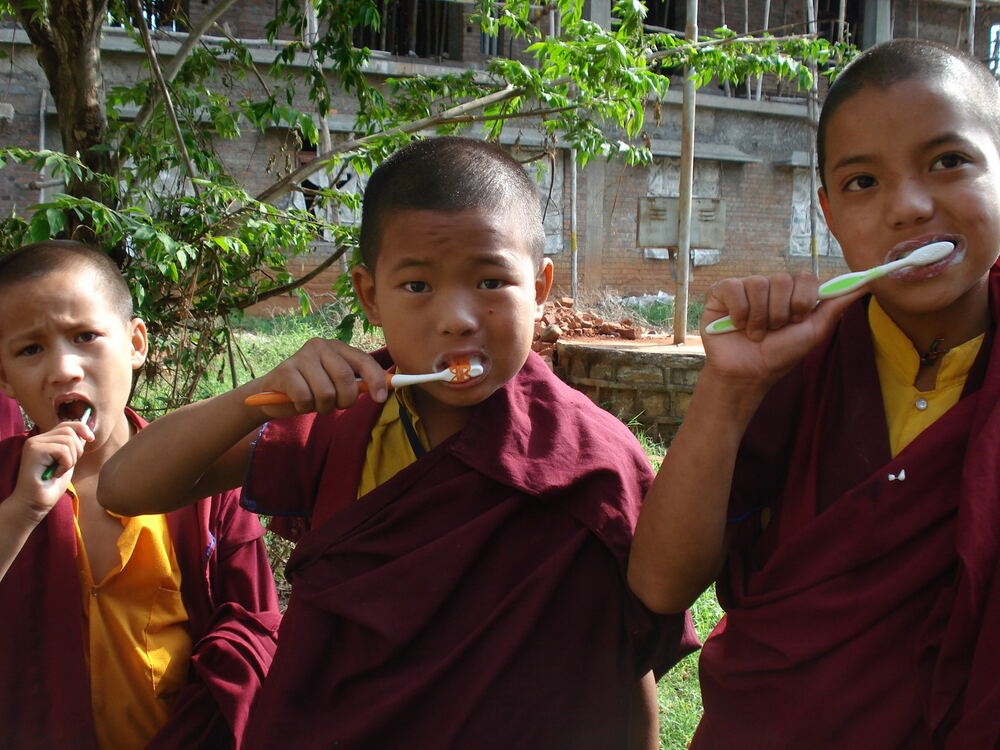

01
The sound travels
声音先于人抵达
A signal could organize a monastery even when monks were scattered across mountain paths and separate cells.
Daily life · Monastic community
A historically informed reconstruction of the daily rhythm that made Buddhist life visible in Jiankang.
Before sunrise · 黎明之前
Enter the monastery while the mountain is still dark. This is a historically informed reconstruction, not the diary of one named Qixia monk.
山色未明，僧团先被声音唤醒。这里不是某一位栖霞僧人的日记，而是一段以史料为基础的体验式复原。
A shared beginning
The signal does not begin a private morning. It calls residents toward a shared practice, turning a group of people into a community with a common time.
声音把寺院变成一个共同体：僧人不只是各自修行，也要在同一个召集信号中行动。

01
声音先于人抵达
A signal could organize a monastery even when monks were scattered across mountain paths and separate cells.
02
它不一定是钟
The Liang biography says 鳴椎—striking the assembly signal—not necessarily the later standardized morning-bell routine.
03
准时成为修行
Gunavarman is remembered as arriving before others. A small detail becomes a portrait of discipline and spiritual authority.
Primary source · 原始史料
於山寺之外，別立禪室，室去寺數里，磬音不聞，每至鳴椎，跋摩已至。
Outside the mountain monastery he built a separate meditation hut, several li from the temple. The sound of the qing could not be heard there; yet whenever the gathering signal was struck, Gunavarman had already arrived.
慧皎《高僧传》卷三〈求那跋摩〉 · 梁代编撰
The next hours · 其后时辰
The exact timetable differed by monastery and period. The important point is the connection between personal practice, institutional work, and the wider city.

04 · 清晨 · Early morning
清晨变成一所学校。
After recitation, the monastery turns from sound to study. The morning is made through repetition: reading, remembering, and explaining until a text can move from the page into the community.
诵念之后，寺院由声音转入学习。清晨由反复构成：诵读、记忆、讲解，直到经文从纸页进入僧团的共同记忆。
A monk returns to the same lines until their rhythm becomes familiar.
读经
Words leave the page and become material that can be carried into recitation and teaching.
记诵
Learning is shared: a monk explains what he has understood to another listener.
讲解
01
Repetition makes memory反复使经文成为记忆
Daily recitation was not only personal devotion; it was a method for preserving texts before they could be consulted everywhere in written form.
02
Study is communal学习属于僧团
Reading becomes institutional when monks hear, repeat, correct, and explain texts together.
03
A monk becomes a teacher僧人也成为教师
The remembered monk is not only a reader. Understanding gives him a role within the community.
Source passage · 史料原文
蔬食布衣，誦正法華經，常一日一遍。又精達經旨，亦為人解說常。
素食穿布衣，诵读《正法华经》，常常一天一遍。又精通经义，也常常为人讲解。
He ate plain food and wore simple cloth; he recited the Zheng Fahua Scripture, usually once each day. He also understood its meaning deeply and explained it to others.
慧皎《高僧传》卷十二〈诵经〉·释昙邃传

05 · 上午 · Mid-morning
寺院向城中打开。
After study, the morning turns outward. Monks move through the settlement with their bowls, and the community becomes visible through the exchange between householders and the sangha.
晨学之后，清晨转向寺外。僧人持钵进入聚落，僧团也在施主与出家人之间的往来中显现出来。
The bowl turns the road into part of the monastery's daily life.
出行
Food enters the sangha through a public exchange between monastics and householders.
受施
The procession brings the city's generosity back across the threshold of the monastery.
归寺
Back from the road, the community turns to the practical work of receiving and ordering food.
备食
A monk returns to a teacher or senior monk, receives instruction, and completes the work entrusted to him.
参师问学
After movement and meal preparation, practical work opens back into reading, seated meditation, or walking meditation.
坐禅／经行
01
The road is part of practice道路也是修行的一部分
A monastery was not sealed off from its surroundings. Movement made its relationship with the wider settlement visible.
02
The bowl joins two communities一只钵连接两个共同体
Alms were not simply private charity. They created a repeated relationship between householders and monks.
03
Presence becomes teaching出现本身也是教化
The sight of an ordered procession could communicate discipline before a single sermon was spoken.
Source passage · 史料原文
乞食還，洗鉢著衣，淨掃食處，洗盛長食器，時至，打揵稚。
乞食回来后，洗净钵，整理衣服，清扫用餐处，洗净盛食器具；时间到了，便敲响揵稚召集僧众。
After returning from alms, the monks washed their bowls, arranged their robes, cleaned the eating place and vessels; when the time came, they struck the assembly signal.
《摩诃僧祇律》卷二十七

06 · 正午 · Midday
饭食从布施而来。
At midday, eating makes the monastery visible as a network of dependence. Food arrives through donors, is ordered by rules, and is taken at a shared time.
到了中午，进食让寺院背后的关系显现出来。饭食来自布施，也受戒律安排；僧人同时进食，共同接受供养。
Food is received as something given, not as a private possession.
受食
The meal marks the day's central boundary: after it, the rhythm of eating gives way to a clearer afternoon.
过午不食
The bowl gathers food, discipline, and the memory of dependence into one object.
一钵而食
01
No private pantry僧团没有私人粮仓
The meal makes visible the network of patrons, kitchens, rules, and labor that supports a monastery.
02
Midday is a boundary正午是一道界线
The timing of food divides the day: nourishment belongs to the first half, while the later hours turn toward practice and work.
03
Eating is disciplined进食也受戒律约束
A shared meal is not an interruption of religious life. It is one of the places where religious order is practiced.
Source passage · 史料原文
故推此晚食，併置中前，自中之後，清虛無事，因此無事，念慮得簡，在始未專，在久自習。
所以把晚食提前到中午以前；过了正午，身心清静，无事可为，念虑也就简少，开始时还不专一，久而久之便会成为习惯。
Therefore the later meal is moved to before midday. After noon, the mind can remain clear and unburdened; thoughts grow simpler, and what is difficult at first becomes a habit over time.
沈约《述僧中食论》·《沈休文集》

07 · 午后 · Afternoon
寺院由双手维持。
The day does not leave the monastery after teaching. Paths must be cleared, kitchens supplied, walls repaired, and gardens tended. Work is one way the community bears its own life.
听讲之后，僧人的一天并没有离开寺院。道路需要清扫，厨房需要补给，墙面需要修整，园地需要照料。劳动使僧团共同承担寺院的生活。
The courtyard is not background scenery; it is a shared responsibility.
洒扫
Small acts of maintenance keep ritual space ready for the next gathering.
整理寺院
Work distributes the weight of institutional life across the community.
同众作务
Once the compound is ordered, the afternoon returns to texts, voices, and memory.
读诵
The body changes pace: sitting still or walking slowly gives the mind another form of attention.
坐禅／经行
Before instruction begins, seats, water, and the teaching space are put in order.
敷座听法
01
Work is not outside practice劳动不在修行之外
A monastery survives through ordinary maintenance as much as through exceptional teaching or ritual.
02
The institution has a body寺院也有身体
Floors, paths, kitchens, gardens, and walls require care; institutional authority is also material.
03
One day, one community一日一众
Shared labor gives the community a practical form after the morning's words and offerings have passed.
Source passage · 史料原文
若讀誦、若坐禪、若經行，以清淨心除諸蓋纏。和尚、阿闍梨當為四眾說法，弟子應掃除說法處，敷坐具，具水瓶，拭手脚巾。
或读诵，或坐禅，或经行，以清净心除去烦恼障碍。和尚、阿阇梨为四众说法时，弟子应清扫说法处，铺设坐具，备好水瓶和拭手脚巾。
They might read and recite, sit in meditation, or practice walking meditation, clearing away the hindrances with a pure mind. When the teacher taught the four assemblies, disciples cleaned the teaching place, spread seats, and prepared water and towels.
《摩诃僧祇律》卷二十七